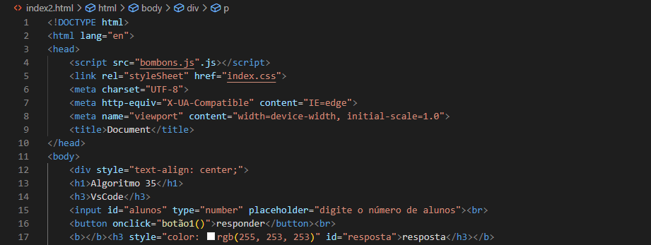

Algoritmo 35
VsCode
"Para o retorno às aulas, cada aluno(a) receberá 2 bombons (1 para si e 1 para os pais), além de 1 bombom para o(a) professor(a).
O objetivo é criar um programa que permita inserir a quantidade de alunos na turma e calcular o total de bombons necessários para atender a essa demanda."
resposta
Interessante, não é mesmo? Vamos explorar o funcionamento com mais detalhes.
Aqui, temos uma imagem que ilustra a seção de JavaScript. Você consegue identificar as semelhanças com o pseudocódigo? O pseudocódigo serviu como a base para a elaboração deste código. Novamente, encontramos a definição das variáveis e a aplicação da fórmula para obter o resultado desejado. No entanto, há um elemento que ainda não foi abordado: como os dados serão inseridos pelo usuário?
Finalmente, chegamos à seção de HTML. Ela compõe a outra metade do código. O HTML cria a barra de inserção de dados, que você observou no início da página. Essa parte é fundamental para a construção da página. No entanto, vale ressaltar que o HTML não é uma linguagem de programação em si. Portanto, é necessário recorrer a linguagens de programação para ampliar as funcionalidades da página.